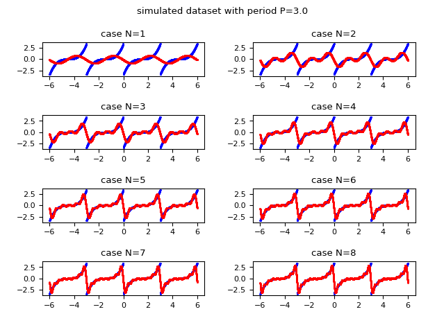
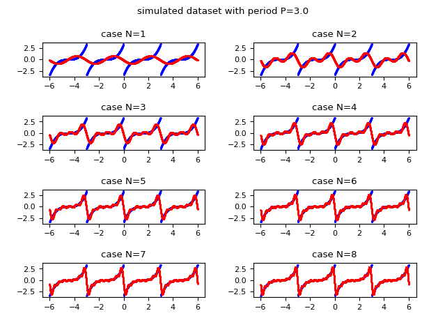
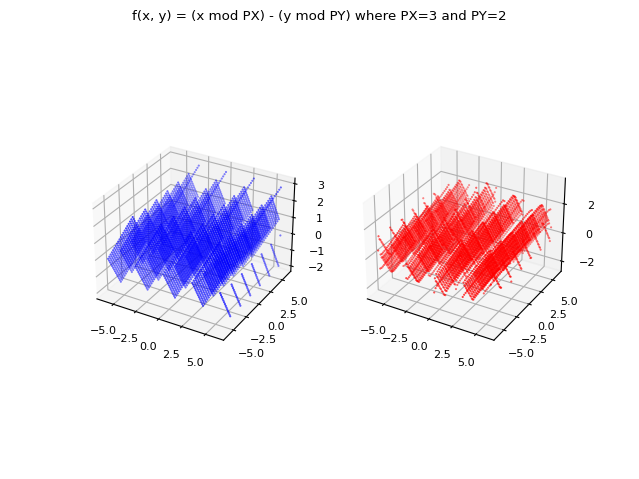
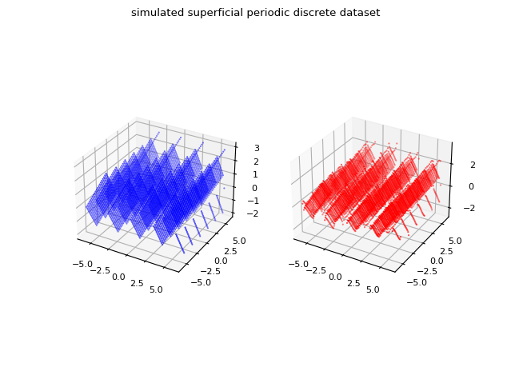

Serie di Fourier in Python
La serie di Fourier è una rappresentazione di una funzione periodica tramite una somma infinita (una serie quindi)
di funzioni $\sin$ e $\cos$ moltiplicate per opportuni coefficienti.
Nel caso di funzioni a valori reali di una variabile reale, sia $f(t)$ una funzione $\mathbb{R} \to \mathbb{R}$ periodica di periodo $P$ integrabile, limitata e continua a tratti nell'intervallo $[0, P]$:
tale funzione può essere rappresentata come serie di Fourier in forma reale:
$$ f(t) = \frac{a_0}{2} + \sum_{n=1}^\infty [a_n \cos{\frac{2 \pi n t}{P}} + b_n \sin{\frac {2 \pi n t}{P}}] $$
dove i coefficienti $a_n$ e $b_n$ sono reali e sono così definiti:
$$ a_0 = \frac{2}{P} \int_{0}^{P} f(t) \,dt $$
$$ a_n = \frac{2}{P} \int_{0}^{P} f(t) \cos{\frac{ 2 \pi n t}{P}}\,dt $$
$$ b_n = \frac{2}{P} \int_{0}^{P} f(t) \sin{\frac{2 \pi n t}{P}}\,dt $$
Applicando la formula di Eulero, la funzione $f(t)$ può essere anche rappresentata nella forma complessa:
$$ f(t) = \sum_{n=-\infty}^\infty c_n e^{\frac{2 i \pi n t}{P}}$$
dove i coefficienti $c_n$ sono complessi e così definiti:
$$ c_n = \frac{1}{P} \int_{0}^{P} f(t) e^{\frac{-2 i \pi n t}{P}}\,dt $$
Nel caso di funzioni a valori complessi di una variabile reale, sia $f(t)$ una funzione $\mathbb{R} \to \mathbb{C}$ periodica di periodo $P$ integrabile, limitata e continua a tratti nell'intervallo $[0, P]$:
la forma reale della serie di Fourier non può essere utilizzata, ma quella complessa appena mostrata sì.
Nei punti di discontinuità, il valore della serie di Fourier è uguale alla media del limite sinistro e del limite destro.
Nota: In alcuni testi, nel presentare la formula della serie di Fourier, si assume implicitamente che il periodo sia $2 \pi$, mentre in questo post
viene fornita la forma più generale ove il periodo può assumere qualsiasi valore ed è indicato con $P$.
Nota: In alcuni testi gli integrali nella formula della serie di Fourier sono calcolati nell'intervallo $[\frac{-P}{2}, \frac{P}{2}]$;
per un teorema sulle serie di Fourier, l'intervallo di integrazione può essere liberamente spostato e
l'unica cosa importante è che sia di lunghezza uguale per periodo;
per semplicità implementativa qui si è scelto l'intervallo $[0, P].$
Nota: In alcuni testi il periodo è indicato con $2P$, quindi $P$ diventerebbe il semiperiodo e questo consentirebbe di eliminare un fattore $2$ nel numeratore nelle formule nella forma reale;
invece in questo post e nel codice relativo, il periodo è indicato con $P$ e il fattore $2$ nel numeratore delle formule rimane.
Esiste un modo alternativo per calcolare i coefficienti complessi della serie di Fourier e consiste nell'utilizzare la trasformata di Fourier.
La trasformata di Fourier è utilizzata moltissimo in fisica e in ingegneria in quanto consente di scrivere una funzione che dipende dal tempo
come combinazione lineare di una base di funzioni esponenziali. Questo post non tratta né la teoria né le applicazioni
della trasformata di Fourier, ma si limita a utilizzarla per calcolare i coefficienti complessi $c_n$ della serie di Fourier
in quanto esiste una relazione tra i coefficienti della serie e la trasformata di Fourier.
Sia $x(t)$ una funzione aperiodica; la definizione della trasformata di Fourier della funzione $x(t)$ è la seguente:
$$ X(\omega) = \int_{-\infty}^{+\infty} x(t) e^{-i \omega t} \,dt $$
Ai fini del calcolo dei coefficienti della serie di Fourier per rappresentare una funzione periodica $f(t)$
non è possibile applicare la trasformata di Fourier a tale funzione, in quanto periodica appunto;
bensì bisogna considerare solamente un periodo di tale funzione (ad esempio l'intervallo $[0, P]$)
e quindi definire una funzione estesa $f_P(t)$ che assume il valore della funzione $f(t)$ per ogni $t \in [0, P]$
e vale $0$ per i valori di $t$ al di fuori di questo intervallo. Formalmente:
$$
f_P(t) =
\begin{cases}f(t) & t \in [0, P] \\ 0 & t \notin [0, P] \end{cases}
$$
Sia $F_P$ la trasformata di Fourier applicata a $f_P(t)$: valendo quest'ultima $0$ fuori dall'intervallo $[0, P]$, valgono i seguenti passaggi:
$$
F_P(\omega) = \int_{-\infty}^{+\infty} f_P(t) e^{-i \omega t} \,dt
= \int_{0}^{P} f_P(t) e^{-i \omega t} \,dt
= \int_{0}^{P} f(t) e^{-i \omega t} \,dt
$$
Ricordando che $c_n$ vale:
$$ c_n = \frac{1}{P} \int_{0}^{P} f(t) e^{\frac{-2 i \pi n t}{P}}\,dt $$
ponendo:
$$ \omega_0 = \frac{2 \pi}{P} $$
si ricava la relazione tra un qualsiasi coefficiente $c_n$ e la trasformata di Fuorier seguendo i seguenti passaggi:
$$
F_P(n \omega_0)
= \int_{0}^{P} f(t) e^{-i n \omega_0 t} \,dt
= \int_{0}^{P} f(t) e^{\frac{-2 i \pi n t}{P}} \,dt
= c_n P
$$
e quindi:
$$ c_n = \frac{1}{P} F_P(n \omega_0) $$
Esiste anche una formulazione n-dimensionale della serie di Fourier ma la sua forma reale è poco compatta e poco utile ai fini pratici;
invece la forma complessa della serie di Fourier multidimensionale è compatta ed è ottenuta per generalizzazione della forma complessa monodimensionale.
Nel caso bidimensionale (2 variabili indipendenti) formula è la seguente:
$$ f(x, y) = \sum_{n_1, n_2=-\infty}^\infty c_{n_1, n_2} e^{\frac{2 i \pi n_1 x}{P_x}} e^{\frac{2 i \pi n_2 y}{P_y}} $$
dove
$$ c_{n_1, n_2} = \frac{1}{P_x} \frac{1}{P_y} \int_{0}^{P_y} \int_{0}^{P_x} f(x, y) e^{\frac{-2 i \pi n_1 x}{P_x}} e^{\frac{-2 i \pi n_2 y}{P_y}}\,dx\,dy $$
Nel caso multidimensionale a $d$ dimensioni è bene utilizzare la notazione vettoriale; sia $\mathbf{x}$ il vettore delle variabili indipendenti
e la formula della serie di Fourier multidimensionale nella forma complessa è la seguente:
$$ f(\mathbf{x}) = \sum_{\mathbf{n} \in \mathbb{Z}^d} c_{\mathbf{n}} e^{\frac{2 i \pi n_1 x_1}{P_1}} ... e^{\frac{2 i \pi n_d x_d}{P_d}} $$
dove
$$ c_{\mathbf{n}} = \frac{1}{P_1} ... \frac{1}{P_d} \int_{[0, P_1] \times ... \times [0, P_d]} f(\mathbf{x}) e^{\frac{-2 i \pi n_1 x_1}{P_1}} ... e^{\frac{-2 i \pi n_d x_d}{P_d}}\,d\mathbf{x} $$
Questo post è organizzato in demo, ovverosia piccoli programmi scritti in Python 3.x tramite la libreria SciPy
(servono inoltre le librerie NumPy e MatPlotLib)
che mostrano varie casistiche di approssimazione di una funzione periodica tramite serie di Fourier.
Si ringrazia la prof.ssa Fausta D'Acunzo di Preparazione 2.0 per il supporto teorico fornito sulla serie e sulla trasformata di Fourier.
Per ottenere il codice di tutte le demo si veda il paragrafo Download del codice completo in fondo a questo post.
Indice delle demo
La demo n° 1 mostra l'approssimazione di una funzione periodica tramite serie di Fourier applicando la definizione nella forma reale.
Naturalmente la sommatoria non può andare fino all'infinito, quindi i cicli di sommatoria dovranno essere limitati ad un valore di $N$
non molto grande, per ovvi motivi di performance, ma sufficiente da avere una approssimazione accettabile.
Per quanto riguarda i calcoli degli integrali si fa uso della libreria SciPy e in particolare della funzione quad;
si rimanda al post Calcolo Integrale in Python su questo sito per dettagli sull'integrazione in Python.
La demo n° 2 mostra l'approssimazione della stessa funzione periodica ma tramite serie di Fourier applicando la definizione nella forma complessa.
Per quanto riguarda i calcoli degli integrali complessi si fa uso della libreria SciPy integrando separatamente la parte reale e la parte immaginaria.
La demo n° 3 mostra l'approssimazione di una funzione periodica a valori complessi tramite serie di Fourier applicando naturalmente la definizione nella forma complessa.
Da un punto di vista applicativo, potrebbe essere lecito domandarsi a che serve approssimare una funzione se si conosce già la funzione stessa.
La risposta è semplice (e quella fornita qui non è l'unica risposta possibile): nel mondo reale la funzione periodica potrebbe essere non nota
ma potrebbe essere disponibile sotto forma di dati discreti (ad esempio acquisiti tramite sensori o misure sul campo); in tal caso l'approssimazione tramite serie di Fourier
diventa molto utile ovviamente realizzando i calcoli degli integreali usando tecniche di integrazione discreta.
La demo n° 4 e la demo n° 5 mostrano come ottenere la serie di Fourier a partire da un insieme discreto di valori (e quindi non più da una funzione analitica data a priori);
precisamente la demo n° 4 opera su un dataset di valori reali mentre la demo n° 5 su un dataset di valori complessi.
La demo n° 6, la demo n° 7 e la demo n° 8 mostrano come calcolare i coefficienti complessi $c_n$ usando la trasformata di Fourier per approssimare una funzione a valori reali
(o un dataset a valori reali nel caso discreto);
in particolare la demo n° 6 si applica al caso continuo e richiede l'uso di integrali,
mentre le altre due si applicano al caso discreto e non richiedono calcolo integrale;
in particolare la demo n° 8 utilizza la funzione della libreria SciPy per il calcolo della trasformata di Fourier veloce che è un algoritmo ottimizzato
per calcolare la trasformata di Fourier discreta in maniera efficiente.
La demo n° 9 e la demo n° 10 sono come la demo n° 6 e la demo n° 8
ma si applicano rispettivamente a una funzione a valori complessi e a un dataset discreto a valori complessi.
La demo n° 11 e la demo n° 12 riguardano la serie di Fourier bidimensionale e si applicano rispettivamente
al caso di una funzione a valori reali di due variabili reali e a un dataset discreto bidimensionale (nel senso di un insieme di punti che giacciono su una superficie nello spazio tridimensionale).
Il lettore è invitato a generalizzare questi casi, ad esempio estendendo la demo n° 11 e la demo n° 12
al caso di funzioni (o dataset) a valori complessi e/o al caso n-dimensionale (ove la notazione vettoriale è certamente più adatta che avere una variabile per ogni dimensione).
Calcolo della serie di Fourier applicando la definizione
Demo n° 1: Calcolo della serie di Fourier nella forma reale di una funzione a valori reali di una variabile reale
Sia data la funzione $\mathbb{R} \to \mathbb{R}$:
$$ f(t) = ((t \mod P) - (P / 2)) ^ 3, P=3$$
che è periodica di periodo uguale a $3$, limitata e continua a tratti.
Qui di seguito l'esempio di codice Python che applica la definizione della serie di Fourier nella forma reale per approssimare tale funzione:
La seguente immagine mostra graficamente come la funzione approssimata con la serie di Fourier migliora l'approssimazione all'aumentare del valore di $N$ (l'indice massimo della sommatoria). Si osservi che già per $N$ uguale a $8$ si ottiene una approssimazione accettabile.

Confronto dei grafici al variare di $N$: in blu la funzione a valori reali originale
e in rosso la funzione approssimata usando la forma reale della serie di Fourier.
e in rosso la funzione approssimata usando la forma reale della serie di Fourier.
Demo n° 2: Calcolo della serie di Fourier nella forma complessa di una funzione a valori reali di una variabile reale
Sia data la funzione $\mathbb{R} \to \mathbb{R}$:
$$ f(t) = ((t \mod P) - (P / 2)) ^ 3, P=3$$
che è periodica di periodo uguale a $3$, limitata e continua a tratti.
Qui di seguito l'esempio di codice Python che applica la definizione della serie di Fourier nella forma complessa per approssimare tale funzione:
La seguente immagine mostra graficamente come la funzione approssimata con la serie di Fourier migliora l'approssimazione all'aumentare del valore di $N$ (l'indice massimo della sommatoria). Si osservi che già per $N$ uguale a $8$ si ottiene una approssimazione accettabile.

Confronto dei grafici al variare di $N$: in blu la funzione a valori reali originale
e in rosso la stessa funzione approssimata usando la forma complessa della serie di Fourier.
e in rosso la stessa funzione approssimata usando la forma complessa della serie di Fourier.
Demo n° 3: Calcolo della serie di Fourier nella forma complessa di una funzione a valori complessi di una variabile reale
Sia data la funzione $\mathbb{R} \to \mathbb{C}$:
$$ f(t) = ((t \mod P) - (P / 2)) ^ 2 + ((t \mod P) - (P / 2)) i, P=3$$
che è periodica di periodo uguale a $3$, limitata e continua a tratti.
Qui di seguito l'esempio di codice Python che applica la definizione della serie di Fourier nella forma complessa per approssimare tale funzione:
La seguente immagine mostra graficamente come la funzione approssimata con la serie di Fourier migliora l'approssimazione all'aumentare del valore di $N$ (l'indice massimo della sommatoria); sulla colonna di sinistra è mostrata la parte reale, sulla colonna di destra quella immaginaria. Si osservi che già per $N$ uguale a $4$ si ottiene una approssimazione accettabile.

Confronto dei grafici al variare di $N$: in blu la funzione a valori complessi originale
e in rosso la stessa funzione approssimata usando la forma complessa della serie di Fourier;
sulla colonna di sinistra è mostrata la parte reale, sulla colonna di destra quella immaginaria.
e in rosso la stessa funzione approssimata usando la forma complessa della serie di Fourier;
sulla colonna di sinistra è mostrata la parte reale, sulla colonna di destra quella immaginaria.
Demo n° 4: Calcolo della serie di Fourier nella forma reale di un dataset periodico, discreto e a valori reali
Sia dato un dataset discreto, che in questa demo è generato dalla funzione $\mathbb{R} \to \mathbb{R}$:
$$ f(t) = ((t \mod P) - (P / 2)) ^ 3, P=3$$
che è periodica di periodo uguale a $3$, limitata e continua a tratti.
Come già detto sopra, nel mondo reale il dataset non è generato da una funzione ma ottenuto tramite sensori, campionamenti, misure sul campo.
Qui di seguito l'esempio di codice Python che applica la definizione della serie di Fourier nella forma reale per approssimare tale dataset discreto:
La seguente immagine mostra graficamente come la funzione approssimata con la serie di Fourier migliora l'approssimazione all'aumentare del valore di $N$ (l'indice massimo della sommatoria). Si osservi che già per $N$ uguale a $8$ si ottiene una approssimazione accettabile.

Confronto dei grafici al variare di $N$: in blu il dataset a valori reali originale
e in rosso l'approssimatazione discreta ottenuta usando la forma reale della serie di Fourier.
e in rosso l'approssimatazione discreta ottenuta usando la forma reale della serie di Fourier.
Demo n° 5: Calcolo della serie di Fourier nella forma complessa di un dataset periodico, discreto e a valori reali
Sia dato un dataset discreto, che in questa demo è generato dalla funzione $\mathbb{R} \to \mathbb{R}$:
$$ f(t) = ((t \mod P) - (P / 2)) ^ 3, P=3$$
che è periodica di periodo uguale a $3$, limitata e continua a tratti.
Come già detto sopra, nel mondo reale il dataset non è generato da una funzione ma ottenuto tramite sensori, campionamenti, misure sul campo.
Qui di seguito l'esempio di codice Python che applica la definizione della serie di Fourier nella forma complessa per approssimare tale dataset discreto:
La seguente immagine mostra graficamente come la funzione approssimata con la serie di Fourier migliora l'approssimazione all'aumentare del valore di $N$ (l'indice massimo della sommatoria). Si osservi che già per $N$ uguale a $8$ si ottiene una approssimazione accettabile.

Confronto dei grafici al variare di $N$: in blu il dataset a valori reali originale
e in rosso l'approssimatazione discreta ottenuta usando la forma complessa della serie di Fourier.
e in rosso l'approssimatazione discreta ottenuta usando la forma complessa della serie di Fourier.
Calcolo della serie di Fourier applicando la trasformata di Fourier
Demo n° 6: Calcolo della serie di Fourier nella forma complessa di una funzione a valori reali di una variabile reale con coefficienti calcolati tramite trasformata di Fourier
Sia data la funzione $\mathbb{R} \to \mathbb{R}$:
$$ f(t) = ((t \mod P) - (P / 2)) ^ 3, P=3$$
che è periodica di periodo uguale a $3$, limitata e continua a tratti.
Nelle demo n° 1, n° 2 e n° 3 si sono calcolati i coefficienti della serie di Fourier (reali nella demo n° 1, complessi nelle altre due) utilizzando la definizione
dei coefficienti come descritto all'inizio del post.
In questa demo invece si mostra come usare la trasformata di Fourier per calcolare i coefficienti della forma complessa della serie di Fourier,
applicando la relazione tra i coefficienti $c_n$ e la trasformata di Fourier come descritto sempre nella parte iniziale di questo post.
Qui di seguito l'esempio di codice Python che approssima la funzione a valori reali tramite la serie nella forma complessa calcolando i coefficienti per mezzo della trasformata di Fourier:
La seguente immagine mostra graficamente come la funzione approssimata con la serie di Fourier migliora l'approssimazione all'aumentare del valore di $N$ (l'indice massimo della sommatoria). Si osservi che già per $N$ uguale a $8$ si ottiene una approssimazione accettabile.

Confronto dei grafici al variare di $N$: in blu la funzione a valori reali originale
e in rosso la stessa funzione approssimata usando la forma complessa della serie di Fourier
i cui coefficienti complessi sono calcolati tramite la trasformata di Fourier.
e in rosso la stessa funzione approssimata usando la forma complessa della serie di Fourier
i cui coefficienti complessi sono calcolati tramite la trasformata di Fourier.
Demo n° 7: Calcolo della serie di Fourier nella forma complessa di un dataset periodico, discreto e a valori reali con coefficienti calcolati tramite trasformata discreta di Fourier
Sia dato un dataset discreto, che in questa demo è generato dalla funzione $\mathbb{R} \to \mathbb{R}$:
$$ f(t) = ((t \mod P) - (P / 2)) ^ 3, P=3$$
che è periodica di periodo uguale a $3$, limitata e continua a tratti.
Come già detto nella demo n° 4, nel mondo reale il dataset non è generato da una funzione ma ottenuto tramite sensori, campionamenti, misure sul campo.
Nella demo n° 6 si sono calcolati i coefficienti della serie di Fourier nella forma complessa utilizzando la definizione dei coefficienti come descritto all'inizio del post.
In questa demo si sfrutta la stessa relazione, ma il calcolo della trasformata di Fuorier, trattandosi di valori discreti, si calcola applicando la trasformata discreta di Fuorier
che è definita nel seguente modo:
$$ F_P(t) = \sum_{k=0}^{K-1} x_k e^{\frac{-2 i \pi k t}{K}} $$
dove $K$ è il numero dei valori del dataset e $x_k$ è il k-esimo valore discreto del dataset (partendo da $0$).
Qui di seguito l'esempio di codice Python che approssima il dataset tramite la serie nella forma complessa calcolando i coefficienti tramite la trasformata discreta di Fourier:
La seguente immagine mostra graficamente come la funzione approssimata con la serie di Fourier migliora l'approssimazione all'aumentare del valore di $N$ (l'indice massimo della sommatoria). Si osservi che già per $N$ uguale a $8$ si ottiene una approssimazione accettabile.

Confronto dei grafici al variare di $N$: in blu il dataset a valori reali originale
e in rosso l'approssimatazione discreta ottenuta usando la forma complessa della serie di Fourier
i cui coefficienti complessi sono calcolati tramite la trasformata discreta di Fourier.
e in rosso l'approssimatazione discreta ottenuta usando la forma complessa della serie di Fourier
i cui coefficienti complessi sono calcolati tramite la trasformata discreta di Fourier.
Demo n° 8: Calcolo della serie di Fourier nella forma complessa di un dataset periodico, discreto e a valori reali con coefficienti calcolati tramite trasformata veloce di Fourier
Sia dato un dataset discreto a valori reali, che in questa demo è generato dalla funzione $\mathbb{R} \to \mathbb{R}$:
$$ f(t) = ((t \mod P) - (P / 2)) ^ 3, P=3$$
che è periodica di periodo uguale a $3$, limitata e continua a tratti.
Come già detto nella demo n° 4, nel mondo reale il dataset non è generato da una funzione ma ottenuto tramite sensori, campionamenti, misure sul campo.
Nella demo n° 7 si sono calcolati i coefficienti della serie di Fourier nella forma complessa utilizzando la trasformata discreta di Fourier.
In questa demo si sfrutta la stessa tecnica, ma il calcolo della trasformata di Fuorier si calcola applicando la trasformata veloce di Fuorier
disponibile nella libreria SciPy tramite la funzione Python scipy.fft.fft.
Qui di seguito l'esempio di codice Python che approssima il dataset a valori reali tramite la serie nella forma complessa calcolando i coefficienti per mezzo della trasformata veloce di Fourier:
La seguente immagine mostra graficamente come la funzione approssimata con la serie di Fourier migliora l'approssimazione all'aumentare del valore di $N$ (l'indice massimo della sommatoria). Si osservi che già per $N$ uguale a $8$ si ottiene una approssimazione accettabile.

Confronto dei grafici al variare di $N$: in blu il dataset a valori reali originale
e in rosso l'approssimatazione discreta ottenuta usando la forma complessa della serie di Fourier
i cui coefficienti complessi sono calcolati tramite la trasformata veloce di Fourier.
e in rosso l'approssimatazione discreta ottenuta usando la forma complessa della serie di Fourier
i cui coefficienti complessi sono calcolati tramite la trasformata veloce di Fourier.
Demo n° 9: Calcolo della serie di Fourier nella forma complessa di una funzione a valori complessi di una variabile reale con coefficienti calcolati tramite trasformata di Fourier
Sia data la funzione $\mathbb{R} \to \mathbb{C}$:
$$ f(t) = ((t \mod P) - (P / 2)) ^ 2 + ((t \mod P) - (P / 2)) i, P=3$$
che è periodica di periodo uguale a $3$, limitata e continua a tratti.
Nella demo n° 6 si sono calcolati i coefficienti della serie di Fourier nella forma complessa usando la trasformata di Fourier applicata su una funzione a valori reali
servendosi della relazione tra i coefficienti $c_n$ e la trasformata di Fourier come descritto sempre nella parte iniziale di questo post.
In questa demo invece si mostra come usare la trasformata di Fourier applicata ad una funzione a valori complessi
per calcolare i coefficienti della serie di Fourier nella forma complessa sfruttando lo stesso procedimento.
Qui di seguito l'esempio di codice Python che approssima la funzione tramite la serie nella forma complessa calcolando i coefficienti per mezzo della trasformata di Fourier:
La seguente immagine mostra graficamente come la funzione approssimata con la serie di Fourier migliora l'approssimazione all'aumentare del valore di $N$ (l'indice massimo della sommatoria); sulla colonna di sinistra è mostrata la parte reale, sulla colonna di destra quella immaginaria. Si osservi che già per $N$ uguale a $4$ si ottiene una approssimazione accettabile.

Confronto dei grafici al variare di $N$: in blu la funzione a valori complessi originale
e in rosso la stessa funzione approssimata usando la forma complessa della serie di Fourier
i cui coefficienti complessi sono calcolati tramite la trasformata di Fourier.
e in rosso la stessa funzione approssimata usando la forma complessa della serie di Fourier
i cui coefficienti complessi sono calcolati tramite la trasformata di Fourier.
Demo n° 10: Calcolo della serie di Fourier nella forma complessa di un dataset periodico, discreto e a valori complessi con coefficienti calcolati tramite trasformata veloce di Fourier
Sia dato un dataset discreto a valori complessi, che in questa demo è generato dalla funzione $\mathbb{R} \to \mathbb{C}$:
$$ f(t) = ((t \mod P) - (P / 2)) ^ 2 + ((t \mod P) - (P / 2)) i, P=3$$
che è periodica di periodo uguale a $3$, limitata e continua a tratti.
Come già detto nelle demo n° 4 e n° 8, nel mondo reale il dataset non è generato da una funzione ma ottenuto tramite sensori, campionamenti, misure sul campo.
Nella demo n° 8 si sono calcolati i coefficienti della serie di Fourier nella forma complessa utilizzando la trasformata discreta veloce di Fourier partendo da dati discreti reali.
In questa demo si sfrutta la stessa tecnica, ma il calcolo della trasformata veloce di Fuorier si calcola applicando la trasformata veloce di Fuorier partendo da dati discreti complessi;
la funzione di Scipy da usare è la stessa della demo n° 8, ovverosia scipy.fft.fft.
Qui di seguito l'esempio di codice Python che approssima il dataset a valori complessi tramite la serie nella forma complessa calcolando i coefficienti per mezzo della trasformata veloce di Fourier:
La seguente immagine mostra graficamente come la funzione approssimata con la serie di Fourier migliora l'approssimazione all'aumentare del valore di $N$ (l'indice massimo della sommatoria); sulla colonna di sinistra è mostrata la parte reale, sulla colonna di destra quella immaginaria. Si osservi che già per $N$ uguale a $4$ si ottiene una approssimazione accettabile.

Confronto dei grafici al variare di $N$: in blu il dataset a valori complessi originale
e in rosso l'approssimatazione discreta ottenuta usando la forma complessa della serie di Fourier
i cui coefficienti complessi sono calcolati tramite la trasformata veloce di Fourier.
e in rosso l'approssimatazione discreta ottenuta usando la forma complessa della serie di Fourier
i cui coefficienti complessi sono calcolati tramite la trasformata veloce di Fourier.
Calcolo della serie di Fourier bidimensionale
Demo n° 11: Calcolo della serie di Fourier nella forma complessa di una funzione a valori reali di due variabili reali
Sia data la funzione $\mathbb{R}^2 \to \mathbb{R}$:
$$ f(x, y) = (x \mod PX) + (y \mod PY), PX=3, PY=3$$
che è periodica di periodo uguale a $3$ sulla variabile $x$ e $2$ sulla variabile $y$, limitata e continua a tratti.
Qui di seguito l'esempio di codice Python che applica la definizione della serie di Fourier nella forma bidimensionale complessa per approssimare tale funzione:
La seguente immagine confronta graficamente la funzione originale e quella approssimata per $N=24$.
Nota:Il codice della demo non è ottimizzato ed è un po' lento; non è stato volutamente ottimizzato per rendere semplice la comprensione del codice, tanto il suo scopo è dimostrativo e nel mondo reale normalmente non si adopera tale meccanismo ma si adopera quello che utilizza la trasformata di Fourier bidimensionale (vedi demo successiva).

Confronto dei grafici per $N=24$: in blu la funzione a valori reali originale di due variabili
e in rosso la stessa funzione approssimata usando la forma bidimensionale complessa della serie di Fourier.
e in rosso la stessa funzione approssimata usando la forma bidimensionale complessa della serie di Fourier.
Demo n° 12: Calcolo della serie di Fourier nella forma complessa di un dataset periodico, discreto, bidimensionale e a valori reali con coefficienti calcolati tramite trasformata veloce di Fourier
Sia dato un dataset bidimensionale discreto a valori reali, che in questa demo è generato dalla funzione $\mathbb{R}^2 \to \mathbb{R}$:
$$ f(x, y) = (x \mod PX) + (y \mod PY), PX=3, PY=3$$
che è periodica di periodo uguale a $3$ sulla variabile $x$ e $2$ sulla variabile $y$, limitata e continua a tratti.
Come già detto nelle demo n° 4, n° 8 e n° 10, nel mondo reale il dataset non è generato da una funzione ma ottenuto tramite sensori, campionamenti, misure sul campo.
Nella demo n° 8 si sono calcolati i coefficienti della serie di Fourier nella forma complessa utilizzando la trasformata discreta veloce di Fourier nel caso di un dataset monodimensionale
In questa demo si sfrutta la stessa tecnica, ma il calcolo della trasformata di Fuorier si calcola applicando la trasformata veloce di Fuorier
al caso di un dataset bidimensionale.
La funzione di Scipy da usare è scipy.fft.fft2.
Qui di seguito l'esempio di codice Python che approssima il dataset bidimensionale a valori reali tramite la serie nella forma complessa calcolando i coefficienti per mezzo della trasformata veloce bidimensionale di Fourier:
La seguente immagine confronta graficamente il dataset originale e l'approssimazione per $N=24$.

Confronto dei grafici per $N=24$: in blu il dataset bidimensionale a valori reali originale
e in rosso l'approssimatazione discreta ottenuta usando la forma bidimensionale complessa della serie di Fourier
i cui coefficienti complessi sono calcolati tramite la trasformata bidimensionale veloce di Fourier.
e in rosso l'approssimatazione discreta ottenuta usando la forma bidimensionale complessa della serie di Fourier
i cui coefficienti complessi sono calcolati tramite la trasformata bidimensionale veloce di Fourier.
Download del codice completo
Il codice completo è disponibile su GitHub a questo indirizzo: fourier-series.
Questo materiale è distribuito su licenza MIT; sentiti libero di usare, condividere, "forkare" e adattare tale materiale come credi.
Sentiti anche libero di pubblicare pull-request e bug-report su questo repository di GitHub oppure di contattarmi sui miei canali social disponibili nell'angolo in alto a destra di questa pagina.